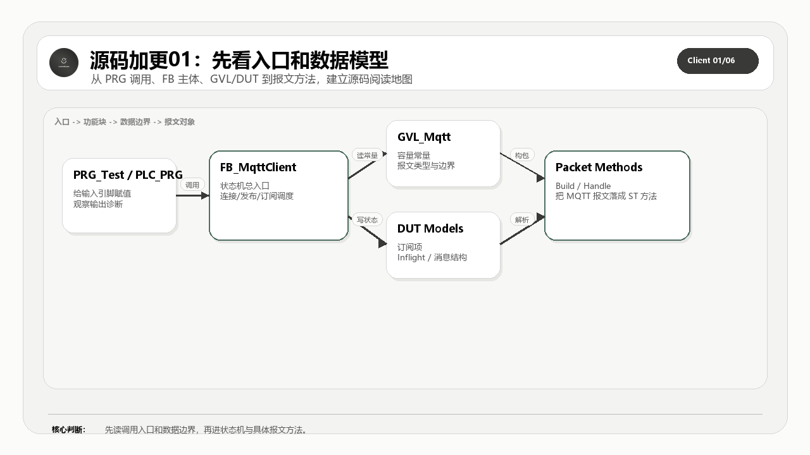

这一篇把 MqttClient V1.0 的工程入口、全局常量和数据结构一次性摆清楚。读者先知道这套开源客户端由哪些对象组成，再进入后面状态机和报文细节。
适合谁收藏
- 第一次打开 MqttClient V1.0 源码，不知道从哪里读起的工程师。
- 想先建立源码地图，再看 CONNECT、PUBLISH 和 QoS 细节的读者。
- 需要把 DUT、GVL、PRG 和 FB 边界讲给团队听的自动化工程师。
本篇核心图

读图重点：先看源码对象之间的职责边界，再看数据、状态和错误如何沿着调用链流动。源码加更不是把文件名列出来，而是把完整代码、工程意图和验证口径一起讲清楚。
先给结论
先看入口和数据模型，不要一上来就钻某个报文方法。MQTT 报文是结果，工程能不能稳定跑，先由容量、状态、事务和诊断模型决定。
从理论到代码实现链路
MQTT 标准给的是报文类型、固定头、可变头、载荷、QoS 交互和会话语义；PLC 工程真正要解决的是周期扫描、缓冲区长度、错误锁存、在线变量、连接重入和现场可诊断性。
所以这套开源实现不能只按协议章节拆，也不能只按文件名拆。正确读法是把标准约束翻译成程序对象：入口程序负责给命令和观测点，GVL 和 DUT 定义容量与数据模型，主功能块负责调度状态机，构建方法负责出站报文，处理方法负责入站报文，辅助方法负责长度、队列、事务、主题和诊断边界。
本篇公开 PRG_Test、GVL_Mqtt 和全部 MQTT DUT。这些代码不是配角，它们决定后面所有报文和状态机能装下什么信息。
再往下一层看，这里其实有两条线同时存在。第一条是协议线：固定头、Remaining Length、PacketId、QoS、Topic、Payload 和 Reason Code 必须能按 MQTT 规则组合起来。第二条是 PLC 工程线：每个周期只能推进有限步骤，所有中间状态都要能被在线变量观察，所有错误都要能被锁存并归类，所有缓冲区长度都要在写入前被检查。
这就是源码加更必须完整公开的原因。只给几段核心片段，读者最多能看懂某个判断；把完整对象放出来，读者才能看到对象之间如何传递状态、长度、错误和诊断信息。完整源码讲解不是为了堆代码，而是为了让读者能从标准约束一路追到可运行的 ST 对象，再从现场现象反向定位到具体边界。
本篇公开的完整源码范围
| 序号 | 源码对象 | 讲解重点 |
|---|---|---|
| 1 | PRG_Test.st | 源码对象职责和验证边界 |
| 2 | GVL_Mqtt.st | 源码对象职责和验证边界 |
| 3 | E_MqttConnectFlag.st | 枚举边界，决定状态、报文类型或返回码的可读性 |
| 4 | E_MqttInflightState.st | 枚举边界，决定状态、报文类型或返回码的可读性 |
| 5 | E_MqttPacketType.st | 枚举边界，决定状态、报文类型或返回码的可读性 |
| 6 | E_MqttPropertyId.st | 枚举边界，决定状态、报文类型或返回码的可读性 |
| 7 | E_MqttPropertyType.st | 枚举边界，决定状态、报文类型或返回码的可读性 |
| 8 | E_MqttQoS.st | 枚举边界，决定状态、报文类型或返回码的可读性 |
| 9 | E_MqttReasonCode.st | 枚举边界，决定状态、报文类型或返回码的可读性 |
| 10 | E_MqttState.st | 枚举边界，决定状态、报文类型或返回码的可读性 |
| 11 | E_MqttSubOption.st | 枚举边界，决定状态、报文类型或返回码的可读性 |
| 12 | E_MqttVersion.st | 枚举边界，决定状态、报文类型或返回码的可读性 |
| 13 | E_ReasonCode.st | 枚举边界，决定状态、报文类型或返回码的可读性 |
| 14 | ST_MqttInflight.st | 结构体边界，决定在线观察和事务记录能否稳定表达 |
| 15 | ST_MqttInflightMessage.st | 结构体边界，决定在线观察和事务记录能否稳定表达 |
| 16 | ST_MqttMessage.st | 结构体边界，决定在线观察和事务记录能否稳定表达 |
| 17 | ST_MqttProperty.st | 结构体边界，决定在线观察和事务记录能否稳定表达 |
| 18 | ST_MqttSubscription.st | 结构体边界，决定在线观察和事务记录能否稳定表达 |
| 19 | ST_MqttTopicAlias.st | 结构体边界，决定在线观察和事务记录能否稳定表达 |
怎么读这些源码
第一遍只看对象职责：这个文件解决哪一层问题，是入口、模型、状态、构建、接收、事务，还是诊断。
第二遍看边界变量：长度、索引、PacketId、QoS、状态枚举、错误码、缓冲区水位和在线观测量。PLC 通信代码最怕的是“能跑但不可诊断”，所以每个关键对象都要问一句：现场出问题时，我能不能从它留下的变量看出原因。
第三遍再看具体语句。源码全部公开，不等于读者要从第一行顺序读到最后一行。更稳的方式是用图和表先建立地图，再回到完整代码里确认每个边界确实落地。
工程验证路径
导入后先编译 DUT 和 GVL，再运行 PRG_Test。第一轮只看客户端实例、连接参数、订阅主题、接收消息和错误诊断是否都有可观测出口。
本篇完整开源代码
完整代码 1：PRG_Test.st
这一段完整公开 PRG_Test.st。读代码时先看对象职责，再看状态、长度、错误和返回值，不要只抄几行赋值。
/// =======================================================================
/// 名称 : PRG_Test
/// 功能 : MQTT 客户端测试程序
/// 说明 : 用于驱动 FB_MqttClient 进行连接、发布、订阅与接收测试
/// 编程人员 : ControlRookie
/// 时间 : 2026-05-05
/// 版本 : V1.0
/// =======================================================================
{attribute 'hide_all_locals'}
PROGRAM PRG_Test
VAR
bInit : BOOL := TRUE; // 初始化执行标志
fbMqttClient : FB_MqttClient; // MQTT 客户端实例
bEnable : BOOL := TRUE; // 使能客户端
bConnect : BOOL; // 连接命令
sBrokerIP : STRING := '192.168.20.2'; // Broker IP 地址
uiPort : UINT := 1883; // Broker 提供 MQTT 服务的监听端口号
sClientID : STRING := 'CodeSys_PLC'; // 客户端标识符
sUsername : STRING := 'CodeSys'; // 用户名
sPassword : STRING := '456852'; // 密码
eVersion : E_MqttVersion := E_MqttVersion.byMqttVersion50; // MQTT 协议版本
bCleanSession : BOOL := TRUE; // 清理会话标志
uiKeepAlive : UINT := 60; // 客户端心跳保活周期[s]
bUseSSL : BOOL := FALSE; // 是否启用 SSL
bAutoReconnect : BOOL := TRUE; // 是否自动重连
uiReconnectDelay : UINT := 5000; // 自动重连前的等待时间[ms]
udiSessionExpiry : UDINT := 0; // “Broker 在你断线后，愿意帮你保留会话多久”的秒数[s]
uiReceiveMax : UINT := 65535; // 客户端告诉 Broker“我最多允许同时压多少条 QoS>0 未完成消息给我”
udMaxPacketSize : UDINT := 4096; // 客户端声明可接收的最大 MQTT 报文长度[byte]
bWillFlag : BOOL := TRUE; // 是否启用遗嘱消息
sWillTopic : STRING(GVL_Mqtt.cnMaxTopicLen) := 'CodeSys'; // 遗嘱主题
sWillMessage : STRING(GVL_Mqtt.cnMaxPayloadSize) := 'CodeSys Offline'; // 遗嘱消息内容
eWillQoS : E_MqttQoS := E_MqttQoS.byQoS2; // 遗嘱消息 QoS
bWillRetain : BOOL := FALSE; // 遗嘱消息保留标志
bPublish : BOOL; // 发布命令
sPubTopic : STRING(GVL_Mqtt.cnMaxTopicLen) := 'CodeSys'; // 发布主题
sPubPayload : STRING(GVL_Mqtt.cnMaxPayloadSize) := 'CodeSys'; // 发布载荷
ePubQoS : E_MqttQoS := E_MqttQoS.byQoS2; // 发布 QoS
bPubRetain : BOOL := FALSE; // 发布保留标志
bSubscribe : BOOL; // 订阅命令
bUnsubscribe : BOOL; // 取消订阅命令
sSubTopic : STRING(GVL_Mqtt.cnMaxTopicLen) := 'CodeSys'; // 订阅主题
sUnsubTopic : STRING(GVL_Mqtt.cnMaxTopicLen) := 'CodeSys'; // 取消订阅主题
eSubQoS : E_MqttQoS := E_MqttQoS.byQoS2; // 订阅请求 QoS
udiSubscriptionId : UDINT := 0; // MQTT 5.0 订阅标识符，便于区分消息属于哪次订阅
eMqttState : E_MqttState; // 客户端当前状态
bIsConnected : BOOL; // TCP 连接状态
bMqttConnected : BOOL; // MQTT 连接状态
bError : BOOL; // 错误标志
eErrorID : NBS.ERROR; // 错误码
sDiagMsg : STRING; // 诊断信息
aSubscriptions : ARRAY[1..GVL_Mqtt.cnMaxSubscriptions] OF ST_MqttSubscription; // 订阅列表
uiSubscriptionCount : UINT; // 当前仍由客户端本地订阅表维护的有效主题数量
sRecTopic : STRING(GVL_Mqtt.cnMaxTopicLen); // 最新接收主题
sRecPayload : STRING(GVL_Mqtt.cnMaxPayloadSize); // 最新接收载荷
aRecTopicList : ARRAY[0..GVL_Mqtt.cnMaxHistory] OF STRING(GVL_Mqtt.cnMaxTopicLen); // 接收主题历史
aRecPayloadList : ARRAY[0..GVL_Mqtt.cnMaxHistory] OF STRING(GVL_Mqtt.cnMaxPayloadSize); // 接收载荷历史
byReceivedQoS : BYTE; // 最新接收 QoS
bReceivedRetain : BOOL; // 最新接收保留标志
END_VAR
// === IMPLEMENTATION ===
/// 该测试程序不做复杂初始化动作，
/// 仅保留一个单次起始位，方便后续扩展测试序列。
IF bInit THEN
bInit := FALSE;
END_IF
/// MQTT客户端
fbMqttClient(
/// =================================== Config ====================================
bEnable := bEnable,
bConnect := bConnect,
sBrokerIP := sBrokerIP,
uiPort := uiPort,
sClientID := sClientID,
sUsername := sUsername,
sPassword := sPassword,
eVersion := eVersion,
bCleanSession := bCleanSession,
uiKeepAlive := uiKeepAlive,
bUseSSL := bUseSSL,
bAutoReconnect := bAutoReconnect,
uiReconnectDelay := uiReconnectDelay,
udiSessionExpiry := udiSessionExpiry,
uiReceiveMax := uiReceiveMax,
udMaxPacketSize := udMaxPacketSize,
/// =================================== 遗嘱 ====================================
bWillFlag := bWillFlag,
sWillTopic := sWillTopic,
sWillMessage := sWillMessage,
eWillQoS := eWillQoS,
bWillRetain := bWillRetain,
/// =================================== 发布 ====================================
bPublish := bPublish,
sPubTopic := sPubTopic,
sPubPayload := sPubPayload,
ePubQoS := ePubQoS,
bPubRetain := bPubRetain,
/// =================================== 订阅 ====================================
bSubscribe := bSubscribe,
sSubTopic := sSubTopic,
eSubQoS := eSubQoS,
udiSubscriptionId := udiSubscriptionId,
bUnsubscribe := bUnsubscribe,
sUnsubTopic := sUnsubTopic,
/// =================================== 状态 ====================================
eState => eMqttState,
bIsConnected => bIsConnected,
bMqttConnected => bMqttConnected,
bError => bError,
eErrorID => eErrorID,
sDiagMsg => sDiagMsg,
aSubscriptions => aSubscriptions,
uiSubscriptionCount => uiSubscriptionCount,
sRecTopic => sRecTopic,
sRecPayload => sRecPayload,
aRecTopicList => aRecTopicList,
aRecPayloadList => aRecPayloadList,
byReceivedQoS => byReceivedQoS,
bReceivedRetain => bReceivedRetain);完整代码 2：GVL_Mqtt.st
这一段完整公开 GVL_Mqtt.st。读代码时先看对象职责，再看状态、长度、错误和返回值，不要只抄几行赋值。
/// =======================================================================
/// 名称 : GVL_Mqtt
/// 功能 : MQTT 协议全局常量定义
/// 说明 : 提供 MQTT 3.1.1 / 5.0 编解码、状态机、缓存和属性处理所需常量
/// 编程人员 : ControlRookie
/// 时间 : 2026-05-05
/// 版本 : V1.0
/// =======================================================================
{attribute 'qualified_only'}
VAR_GLOBAL CONSTANT
/// ===================================================================
/// 缓冲区、容量与循环保护
/// ===================================================================
cnSendBufferSize : UINT := 4096; // MQTT 发送缓冲区容量[byte]
cnRecvBufferSize : UINT := 4096; // MQTT 接收缓冲区容量[byte]
cnMaxSubscriptions : UINT := 32; // 本地订阅表允许登记的最大主题数量
cnMaxInflight : UINT := 10; // 本地可同时跟踪的最大 QoS>0 在途消息数量
cnMaxTopicAlias : UINT := 16; // 本地支持登记的最大主题别名数量
cnMaxHistory : UINT := 50; // 接收消息历史列表允许保留的最大条目数
cnMaxPropertyLoop : UINT := 100; // 解析 MQTT 5.0 属性时允许的最大循环次数
/// ===================================================================
/// 超时、重试与重连节拍
/// ===================================================================
cnNetworkTimeout : TIME := T#10S; // 网络层读写等待超时时间[ms]
cnConnectTimeout : TIME := T#30S; // 建立 MQTT 会话的最大等待时间[ms]
cnResponseTimeout : TIME := T#5S; // 等待服务器响应报文的默认超时时间[ms]
cnPublishTimeout : TIME := T#10S; // 等待发布流程完成的默认超时时间[ms]
cnInflightTimeout : TIME := T#10S; // 在途 QoS 报文判定超时的时间阈值[ms]
cnMaxRetries : UINT := 5; // 单条在途消息允许的最大重试次数
cnRetryInterval : TIME := T#3S; // 两次重试之间的等待间隔[ms]
cnReconnectBase : TIME := T#1S; // 自动重连基础退避时间[ms]
cnReconnectMax : TIME := T#60S; // 自动重连最大退避时间[ms]
/// ===================================================================
/// 协议基础字符串、端口与长度上限
/// ===================================================================
cnWildcardMulti : STRING := '#'; // 多层通配符
cnWildcardSingle : STRING := '+'; // 单层通配符
cnTopicSeparator : STRING := '/'; // 主题分隔符
cnProtocolName : STRING := 'MQTT'; // 协议名称
cnProtocolLevelV311 : BYTE := 4; // MQTT 3.1.1 协议级别
cnProtocolLevelV50 : BYTE := 5; // MQTT 5.0 协议级别
cnProtocolLevel : BYTE := 5; // 默认协议级别
cnDefaultPort : UINT := 1883; // MQTT 默认非加密监听端口号
cnDefaultPortTls : UINT := 8883; // MQTT TLS 默认监听端口号
cnMaxPacketSize : UDINT := 268435455; // MQTT 协议允许的最大报文长度[byte]
cnMaxPayloadSize : UINT := 2048; // 本库默认允许的最大消息载荷长度[byte]
cnMaxTopicLen : UINT := 256; // 本库默认允许的最大主题字符串长度[char]
cnMaxClientIdLen : UINT := 256; // ClientId 允许的最大字符串长度[char]
cnMaxStringLen : UINT := 65535; // MQTT UTF-8 字符串允许的最大长度[byte]
/// ===================================================================
/// 固定报头与 CONNECT / CONNACK 标志位
/// ===================================================================
cnHdrTypeMask : BYTE := 16#F0; // 固定报头类型掩码
cnHdrFlagsMask : BYTE := 16#0F; // 固定报头标志掩码
cnHdrDupFlag : BYTE := 16#08; // DUP 标志位
cnHdrQoSMask : BYTE := 16#06; // QoS 标志位掩码
cnHdrRetainFlag : BYTE := 16#01; // Retain 标志位
cnConnectFlagUsername : BYTE := 16#80; // CONNECT 用户名标志
cnConnectFlagPassword : BYTE := 16#40; // CONNECT 密码标志
cnConnectFlagWillRetain : BYTE := 16#20; // CONNECT 遗嘱保留标志
cnConnectFlagWillQoS : BYTE := 16#18; // CONNECT 遗嘱 QoS 标志
cnConnectFlagWill : BYTE := 16#04; // CONNECT 遗嘱使能标志
cnConnectFlagCleanStart : BYTE := 16#02; // CONNECT 清理会话标志
cnConnAckSessionPresent : BYTE := 16#01; // CONNACK 会话存在标志
/// ===================================================================
/// 默认 KeepAlive、Receive Maximum 与 Packet Identifier 取值范围
/// ===================================================================
cnKeepAliveDefault : UINT := 60; // 默认客户端心跳保活周期[s]
cnKeepAliveFactor : REAL := 1.5; // 心跳超时倍数
cnDefaultReceiveMax : UINT := 65535; // 默认可并发接收的最大 QoS>0 在途报文数量
cnMsgIdMin : UINT := 1; // MQTT Packet Identifier 允许的最小值
cnMsgIdMax : UINT := 65535; // MQTT Packet Identifier 允许的最大值
/// ===================================================================
/// MQTT 5.0 常用 Reason Code
/// ===================================================================
cnRcSuccess : BYTE := 16#00; // 成功原因码
cnRcGrantedQoS0 : BYTE := 16#00; // 授予 QoS0
cnRcGrantedQoS1 : BYTE := 16#01; // 授予 QoS1
cnRcGrantedQoS2 : BYTE := 16#02; // 授予 QoS2
cnRcDisconnectWithWill : BYTE := 16#04; // 带遗嘱断开连接
cnRcNoMatchingSubscribers : BYTE := 16#10; // 无匹配订阅者
cnRcNoSubscriptionExisted : BYTE := 16#11; // 订阅不存在
cnRcContinueAuth : BYTE := 16#18; // 继续认证
cnRcReauth : BYTE := 16#19; // 重新认证
cnRcUnspecifiedError : BYTE := 16#80; // 未指定错误
cnRcMalformedPacket : BYTE := 16#81; // 畸形报文
cnRcProtocolError : BYTE := 16#82; // 协议错误
cnRcImplementationSpecific : BYTE := 16#83; // 实现特定错误
cnRcProtocolUnsupported : BYTE := 16#84; // 协议版本不支持
cnRcClientIdentifierInvalid : BYTE := 16#85; // 客户端标识符非法
cnRcBadUsernamePassword : BYTE := 16#86; // 用户名或密码错误
cnRcNotAuthorized : BYTE := 16#87; // 未授权
cnRcServerUnavailable : BYTE := 16#88; // 服务器不可用
cnRcServerBusy : BYTE := 16#89; // 服务器忙
cnRcBanned : BYTE := 16#8A; // 被禁止访问
cnRcServerShuttingDown : BYTE := 16#8B; // 服务器关闭中
cnRcBadAuthMethod : BYTE := 16#8C; // 认证方法错误
cnRcKeepAliveTimeout : BYTE := 16#8D; // 心跳超时
cnRcSessionTakenOver : BYTE := 16#8E; // 会话被接管
cnRcTopicFilterInvalid : BYTE := 16#8F; // 主题过滤器非法
cnRcTopicNameInvalid : BYTE := 16#90; // 主题名非法
cnRcPacketIdInUse : BYTE := 16#91; // 当前 Packet Identifier 已被占用
cnRcPacketIdNotFound : BYTE := 16#92; // 当前 Packet Identifier 未找到对应上下文
cnRcReceiveMaxExceeded : BYTE := 16#93; // 对端允许的并发未完成 QoS>0 消息数量已被超出
cnRcTopicAliasInvalid : BYTE := 16#94; // 主题别名非法
cnRcPacketTooLarge : BYTE := 16#95; // 报文过大
cnRcMessageRateTooHigh : BYTE := 16#96; // 消息速率过高
cnRcQuotaExceeded : BYTE := 16#97; // 超出配额
cnRcAdministrativeAction : BYTE := 16#98; // 管理操作导致失败
cnRcPayloadFormatInvalid : BYTE := 16#99; // 载荷格式非法
cnRcRetainNotSupported : BYTE := 16#9A; // 不支持保留消息
cnRcQoSNotSupported : BYTE := 16#9B; // 不支持 QoS
cnRcUseAnotherServer : BYTE := 16#9C; // 需改用其他服务器
cnRcServerMoved : BYTE := 16#9D; // 服务器已迁移
cnRcSharedSubNotSupported : BYTE := 16#9E; // 不支持共享订阅
cnRcConnectionRateExceeded : BYTE := 16#9F; // 连接速率超限
cnRcMaxConnectTime : BYTE := 16#A0; // 达到最大连接时长
cnRcSubIdNotSupported : BYTE := 16#A1; // 不支持订阅标识符
cnRcWildcardSubNotSupported : BYTE := 16#A2; // 不支持通配符订阅
/// ===================================================================
/// MQTT 5.0 Property Identifier
/// ===================================================================
cnPropPayloadFormat : BYTE := 16#01; // 载荷格式属性
cnPropMessageExpiry : BYTE := 16#02; // 消息过期属性
cnPropContentType : BYTE := 16#03; // 内容类型属性
cnPropResponseTopic : BYTE := 16#08; // 响应主题属性
cnPropCorrelationData : BYTE := 16#09; // 关联数据属性
cnPropSubscriptionId : BYTE := 16#0B; // 订阅标识符属性
cnPropSessionExpiry : BYTE := 16#11; // 会话过期属性
cnPropAssignedClientId : BYTE := 16#12; // 分配客户端标识符属性
cnPropServerKeepAlive : BYTE := 16#13; // 服务端心跳属性
cnPropAuthMethod : BYTE := 16#15; // 认证方法属性
cnPropAuthData : BYTE := 16#16; // 认证数据属性
cnPropRequestProblemInfo : BYTE := 16#17; // 请求问题信息属性
cnPropWillDelayInterval : BYTE := 16#18; // 遗嘱延迟属性
cnPropRequestResponseInfo : BYTE := 16#19; // 请求响应信息属性
cnPropResponseInfo : BYTE := 16#1A; // 响应信息属性
cnPropServerReference : BYTE := 16#1C; // 服务端引用属性
cnPropReasonString : BYTE := 16#1F; // 原因字符串属性
cnPropReceiveMaximum : BYTE := 16#21; // Receive Maximum 属性标识符
cnPropTopicAliasMax : BYTE := 16#22; // 最大主题别名属性
cnPropTopicAlias : BYTE := 16#23; // 主题别名属性
cnPropMaxQoS : BYTE := 16#24; // 最大 QoS 属性
cnPropRetainAvailable : BYTE := 16#25; // 保留消息可用属性
cnPropUserProperty : BYTE := 16#26; // 用户属性
cnPropMaxPacketSize : BYTE := 16#27; // Maximum Packet Size 属性标识符
cnPropWildcardSubAvail : BYTE := 16#28; // 通配符订阅可用属性
cnPropSubIdAvail : BYTE := 16#29; // 订阅标识符可用属性
cnPropSharedSubAvail : BYTE := 16#2A; // 共享订阅可用属性
/// ===================================================================
/// 内部属性编解码辅助类型标记
/// ===================================================================
cnPropTypeByte : BYTE := 1; // 属性单字节类型
cnPropTypeUint16 : BYTE := 2; // 属性 16 位无符号类型
cnPropTypeUint32 : BYTE := 3; // 属性 32 位无符号类型
cnPropTypeString : BYTE := 4; // 属性字符串类型
cnPropTypeBinary : BYTE := 5; // 属性二进制类型
cnPropTypeStringPair : BYTE := 6; // 属性字符串对类型
END_VAR完整代码 3：E_MqttConnectFlag.st
这一段完整公开 E_MqttConnectFlag.st。读代码时先看对象职责，再看状态、长度、错误和返回值，不要只抄几行赋值。
/// =======================================================================
/// 名称 : E_MqttConnectFlag
/// 功能 : MQTT CONNECT 标志位掩码枚举
/// 说明 : 对应 CONNECT 报文可变报头中的 Connect Flags 字节。
/// 这些值本质上是位掩码，组包时按需 OR 到同一个字节里。
/// 编程人员 : ControlRookie
/// 时间 : 2026-05-08
/// 版本 : V2.0
/// =======================================================================
{attribute 'qualified_only'}
{attribute 'strict'}
TYPE E_MqttConnectFlag :
(
CONNECT_FLAG_USERNAME := 16#80, // Username Flag，CONNECT 中携带用户名时置位
CONNECT_FLAG_PASSWORD := 16#40, // Password Flag，CONNECT 中携带密码时置位
CONNECT_FLAG_WILL_RETAIN := 16#20, // Will Retain，遗嘱消息按 Retain 方式发布
CONNECT_FLAG_WILL_QOS1 := 16#08, // Will QoS 位 0，和 QoS2 掩码组合表示遗嘱 QoS
CONNECT_FLAG_WILL_QOS2 := 16#10, // Will QoS 位 1，和 QoS1 掩码组合表示遗嘱 QoS
CONNECT_FLAG_WILL := 16#04, // Will Flag，启用遗嘱消息
CONNECT_FLAG_CLEAN_START := 16#02 // Clean Session / Clean Start 标志位
) BYTE;
END_TYPE完整代码 4：E_MqttInflightState.st
这一段完整公开 E_MqttInflightState.st。读代码时先看对象职责，再看状态、长度、错误和返回值，不要只抄几行赋值。
/// =======================================================================
/// 名称 : E_MqttInflightState
/// 功能 : MQTT 在途消息状态枚举
/// 说明 : 定义 QoS1 / QoS2 消息在确认流程中的生命周期状态
/// 编程人员 : ControlRookie
/// 时间 : 2026-05-08
/// 版本 : V2.0
/// =======================================================================
{attribute 'qualified_only'}
{attribute 'strict'}
TYPE E_MqttInflightState :
(
iIdle := 0, // 空闲
iPublishSent := 1, // PUBLISH 已发送，等待 PUBACK / PUBREC
iPubRecReceived := 2, // 已收到 PUBREC，等待发送 PUBREL
iPubRelSent := 3, // PUBREL 已发送，等待 PUBCOMP
iCompleted := 4 // 流程完成
) INT;
END_TYPE完整代码 5：E_MqttPacketType.st
这一段完整公开 E_MqttPacketType.st。读代码时先看对象职责，再看状态、长度、错误和返回值，不要只抄几行赋值。
/// =======================================================================
/// 名称 : E_MqttPacketType
/// 功能 : MQTT 控制报文类型枚举
/// 说明 : 定义 MQTT 3.1.1 / 5.0 固定报头高 4 位对应的控制包类型
/// 编程人员 : ControlRookie
/// 时间 : 2026-05-05
/// 版本 : V1.1
/// =======================================================================
{attribute 'qualified_only'}
{attribute 'strict'}
TYPE E_MqttPacketType :
(
byReserved := 16#00, // 保留值，不允许发送
byConnect := 16#10, // CONNECT 报文
byConnAck := 16#20, // CONNACK 报文
byPublish := 16#30, // PUBLISH 报文（固定头低位另含标志）
byPubAck := 16#40, // PUBACK 报文
byPubRec := 16#50, // PUBREC 报文
byPubRel := 16#62, // PUBREL 报文（含固定标志 0010）
byPubComp := 16#70, // PUBCOMP 报文
bySubscribe := 16#82, // SUBSCRIBE 报文（含固定标志 0010）
bySubAck := 16#90, // SUBACK 报文
byUnsubscribe := 16#A2, // UNSUBSCRIBE 报文（含固定标志 0010）
byUnsubAck := 16#B0, // UNSUBACK 报文
byPingReq := 16#C0, // PINGREQ 报文
byPingResp := 16#D0, // PINGRESP 报文
byDisconnect := 16#E0, // DISCONNECT 报文
byAuth := 16#F0 // AUTH 报文（MQTT 5.0）
) BYTE;
END_TYPE完整代码 6：E_MqttPropertyId.st
这一段完整公开 E_MqttPropertyId.st。读代码时先看对象职责，再看状态、长度、错误和返回值，不要只抄几行赋值。
/// =======================================================================
/// 名称 : E_MqttPropertyId
/// 功能 : MQTT 5.0 属性标识符枚举
/// 说明 : 定义 MQTT 5.0 各类属性在报文中的标识符编码值，
/// 用于 CONNECT / CONNACK / PUBLISH / SUBSCRIBE 等报文属性段编解码
/// 编程人员 : ControlRookie
/// 时间 : 2026-05-08
/// 版本 : V2.0
/// =======================================================================
{attribute 'qualified_only'}
{attribute 'strict'}
TYPE E_MqttPropertyId :
(
byPropPayloadFormat := 16#01, // 载荷格式指示器
byPropMessageExpiryInterval := 16#02, // 消息过期间隔
byPropContentType := 16#03, // 内容类型
byPropResponseTopic := 16#08, // 响应主题
byPropCorrelationData := 16#09, // 关联数据
byPropSubscriptionId := 16#0B, // 订阅标识符
byPropSessionExpiryInterval := 16#11, // Broker 保留断线会话时长属性[s]
byPropAssignedClientId := 16#12, // 分配客户端标识符
byPropServerKeepAlive := 16#13, // 服务端心跳间隔
byPropAuthMethod := 16#15, // 认证方法
byPropAuthData := 16#16, // 认证数据
byPropRequestProblemInfo := 16#17, // 请求问题信息
byPropWillDelayInterval := 16#18, // 遗嘱延迟间隔
byPropRequestResponseInfo := 16#19, // 请求响应信息
byPropResponseInfo := 16#1A, // 响应信息
byPropServerReference := 16#1C, // 服务端引用
byPropReasonString := 16#1F, // 原因字符串
byPropReceiveMax := 16#21, // 对端声明可同时处理的最大 QoS>0 未完成消息数量
byPropTopicAliasMax := 16#22, // 主题别名最大值
byPropTopicAlias := 16#23, // 主题别名
byPropMaxQos := 16#24, // 最大 QoS
byPropRetainAvailable := 16#25, // 保留消息可用
byPropUserProperty := 16#26, // 用户属性
byPropMaxPacketSize := 16#27, // 最大报文大小
byPropWildcardSubAvailable := 16#28, // 通配符订阅可用
byPropSubIdAvailable := 16#29, // 订阅标识符可用
byPropSharedSubscriptionAvailable:= 16#2A // 共享订阅可用
) BYTE;
END_TYPE完整代码 7：E_MqttPropertyType.st
这一段完整公开 E_MqttPropertyType.st。读代码时先看对象职责，再看状态、长度、错误和返回值，不要只抄几行赋值。
/// =======================================================================
/// 名称 : E_MqttPropertyType
/// 功能 : MQTT 5.0 属性值类型枚举
/// 说明 : 定义属性编解码时使用的数据类型分类
/// 编程人员 : ControlRookie
/// 时间 : 2026-05-08
/// 版本 : V2.0
/// =======================================================================
{attribute 'qualified_only'}
{attribute 'strict'}
TYPE E_MqttPropertyType :
(
byPropTypeByte := 1, // 单字节类型
byPropTypeUint16 := 2, // 无符号 16 位类型
byPropTypeUint32 := 3, // 无符号 32 位类型
byPropTypeString := 4, // 字符串类型
byPropTypeBinary := 5, // 二进制数据类型
byPropTypeStringPair := 6 // 字符串对类型
) BYTE;
END_TYPE完整代码 8：E_MqttQoS.st
这一段完整公开 E_MqttQoS.st。读代码时先看对象职责，再看状态、长度、错误和返回值，不要只抄几行赋值。
/// =======================================================================
/// 名称 : E_MqttQoS
/// 功能 : MQTT QoS 等级枚举
/// 说明 : 定义 MQTT 消息服务质量级别
/// 编程人员 : ControlRookie
/// 时间 : 2026-05-08
/// 版本 : V2.0
/// =======================================================================
{attribute 'qualified_only'}
{attribute 'strict'}
TYPE E_MqttQoS :
(
byQoS0 := 0, // 最多一次，不确认
byQoS1 := 1, // 至少一次，需要 PUBACK
byQoS2 := 2 // 只有一次，四步握手
) BYTE;
END_TYPE完整代码 9：E_MqttReasonCode.st
这一段完整公开 E_MqttReasonCode.st。读代码时先看对象职责，再看状态、长度、错误和返回值，不要只抄几行赋值。
/// =======================================================================
/// 名称 : E_MqttReasonCode
/// 功能 : MQTT 5.0 协议原因码枚举
/// 说明 : 定义 MQTT 5.0 报文中的标准原因码，用于 CONNACK、PUBACK、SUBACK、
/// UNSUBACK、DISCONNECT 等报文的原因字段解析与编码
/// 编程人员 : ControlRookie
/// 时间 : 2026-05-08
/// 版本 : V2.0
/// =======================================================================
{attribute 'qualified_only'}
{attribute 'strict'}
TYPE E_MqttReasonCode :
(
bySuccess := 16#00, // 操作成功或授予 QoS 0
byGrantedQos1 := 16#01, // 授予 QoS 1
byGrantedQos2 := 16#02, // 授予 QoS 2
byDisconnectWithWill := 16#04, // 带遗嘱断开连接
byNoMatchingSubscribers := 16#10, // 无匹配订阅者
byNoSubscriptionExisted := 16#11, // 订阅不存在
byContinueAuth := 16#18, // 继续认证
byReauth := 16#19, // 重新认证
byUnspecifiedError := 16#80, // 未指定错误
byMalformedPacket := 16#81, // 畸形报文
byProtocolError := 16#82, // 协议错误
byImplementationSpecific := 16#83, // 实现特定错误
byUnsupportedProtocolVersion := 16#84, // 不支持的协议版本
byClientIdentifierInvalid := 16#85, // 客户端标识符非法
byBadUserNamePassword := 16#86, // 用户名或密码错误
byNotAuthorized := 16#87, // 未授权
byServerUnavailable := 16#88, // 服务器不可用
byServerBusy := 16#89, // 服务器忙
byBanned := 16#8A, // 被禁止访问
byServerShuttingDown := 16#8B, // 服务器关闭中
byBadAuthMethod := 16#8C, // 认证方法错误
byKeepAliveTimeout := 16#8D, // 心跳超时
bySessionTakenOver := 16#8E, // 会话被接管
byTopicFilterInvalid := 16#8F, // 主题过滤器无效
byTopicNameInvalid := 16#90, // 主题名称无效
byPacketIdentifierInUse := 16#91, // 当前 Packet Identifier 已被占用
byPacketIdentifierNotFound := 16#92, // 当前 Packet Identifier 未找到对应上下文
byReceiveMaximumExceeded := 16#93, // 超过接收最大值
byTopicAliasInvalid := 16#94, // 主题别名无效
byPacketTooLarge := 16#95, // 报文过大
byMessageRateTooHigh := 16#96, // 消息速率过高
byQuotaExceeded := 16#97, // 超过配额
byAdministrativeAction := 16#98, // 管理动作导致失败
byPayloadFormatInvalid := 16#99, // 载荷格式非法
byRetainNotSupported := 16#9A, // 不支持 Retain
byQosNotSupported := 16#9B, // 不支持 QoS
byUseAnotherServer := 16#9C, // 需改用其他服务器
byServerMoved := 16#9D, // 服务器已迁移
bySharedSubscriptionsNotSupported := 16#9E, // 不支持共享订阅
byConnectionRateExceeded := 16#9F, // 连接速率超限
byMaximumConnectTime := 16#A0, // 达到最大连接时长
bySubscriptionIdentifiersNotSupported := 16#A1, // 不支持订阅标识符
byWildcardSubscriptionsNotSupported := 16#A2, // 不支持通配符订阅
byMalformedResponse := 16#FF // 本地解析用扩展值，非协议标准值
) BYTE;
END_TYPE完整代码 10：E_MqttState.st
这一段完整公开 E_MqttState.st。读代码时先看对象职责，再看状态、长度、错误和返回值，不要只抄几行赋值。
/// =======================================================================
/// 名称 : E_MqttState
/// 功能 : MQTT 客户端状态机枚举
/// 说明 : 定义 FB_MqttClient 内部运行状态，用于 TCP 建链、MQTT 握手、
/// Publish / Subscribe 闭环、KeepAlive 与断线恢复流程
/// 编程人员 : ControlRookie
/// 时间 : 2026-05-08
/// 版本 : V2.0
/// =======================================================================
{attribute 'qualified_only'}
{attribute 'strict'}
TYPE E_MqttState :
(
iDisconnected := 0, // 空闲断开状态
iTcpConnect := 10, // TCP 建连中
iConnect := 20, // 发送 CONNECT 报文
iConnAck := 30, // 等待 CONNACK 响应
iConnected := 40, // MQTT 已连接
iAuth := 45, // 认证扩展状态（MQTT 5.0）
iPublish := 60, // 发送 PUBLISH 报文
iPubAck := 70, // 等待 PUBACK
iPubRec := 80, // 等待 PUBREC
iPubRel := 90, // 发送 PUBREL
iPubComp := 100, // 等待 PUBCOMP
iSubscribe := 110, // 发送 SUBSCRIBE 报文
iSubAck := 120, // 等待 SUBACK
iUnsubscribe := 130, // 发送 UNSUBSCRIBE 报文
iUnsubAck := 140, // 等待 UNSUBACK
iPingReq := 150, // 发送心跳请求
iPingResp := 160, // 等待 PINGRESP
iDisconnect := 170, // 发送 MQTT 断开报文
iTcpDisconnect := 180 // TCP 断开处理
) INT;
END_TYPE完整代码 11：E_MqttSubOption.st
这一段完整公开 E_MqttSubOption.st。读代码时先看对象职责，再看状态、长度、错误和返回值，不要只抄几行赋值。
/// =======================================================================
/// 名称 : E_MqttSubOption
/// 功能 : MQTT 5.0 订阅选项字节枚举
/// 说明 : 定义 SUBSCRIBE 载荷中的订阅选项位编码，
/// 用于拼接 QoS、No Local、Retain Handling 等订阅参数
/// 编程人员 : ControlRookie
/// 时间 : 2026-05-08
/// 版本 : V2.0
/// =======================================================================
{attribute 'qualified_only'}
{attribute 'strict'}
TYPE E_MqttSubOption :
(
bySubOptQos0 := 2#00000000, // QoS 等级 0
bySubOptQos1 := 2#00000001, // QoS 等级 1
bySubOptQos2 := 2#00000010, // QoS 等级 2
bySubOptNoLocal := 2#00000100, // 不接收本客户端发布消息
bySubOptRetainAsPublished := 2#00001000, // 保留标志按原消息传递
bySubOptRetainSend := 2#00000000, // 发送保留消息
bySubOptRetainNewOnly := 2#00010000, // 仅向新订阅发送保留消息
bySubOptRetainNotSend := 2#00100000 // 不发送保留消息
) BYTE;
END_TYPE完整代码 12：E_MqttVersion.st
这一段完整公开 E_MqttVersion.st。读代码时先看对象职责，再看状态、长度、错误和返回值，不要只抄几行赋值。
/// =======================================================================
/// 名称 : E_MqttVersion
/// 功能 : MQTT 协议版本枚举
/// 说明 : 用于切换 MQTT 3.1.1 与 MQTT 5.0 编解码逻辑
/// 编程人员 : ControlRookie
/// 时间 : 2026-05-08
/// 版本 : V2.0
/// =======================================================================
{attribute 'qualified_only'}
{attribute 'strict'}
TYPE E_MqttVersion :
(
byMqttVersion311 := 4, // MQTT 3.1.1 协议级别
byMqttVersion50 := 5 // MQTT 5.0 协议级别
) BYTE;
END_TYPE完整代码 13：E_ReasonCode.st
这一段完整公开 E_ReasonCode.st。读代码时先看对象职责，再看状态、长度、错误和返回值，不要只抄几行赋值。
/// =======================================================================
/// 名称 : E_ReasonCode
/// 功能 : MQTT 客户端内部错误码枚举
/// 说明 : 定义 FB_MqttClient 内部统一错误码，供诊断与状态输出使用
/// 编程人员 : ControlRookie
/// 时间 : 2026-05-05
/// 版本 : V1.1
/// =======================================================================
{attribute 'qualified_only'}
{attribute 'strict'}
TYPE E_ReasonCode :
(
uiErrNoError := 0, // 无错误
uiErrTcpConnectFailed := 1001, // TCP 建连失败
uiErrTcpSendFailed := 1002, // TCP 发送失败
uiErrTcpReceiveFailed := 1003, // TCP 接收失败
uiErrTimeout := 1004, // 操作超时
uiErrProtocolError := 1005, // MQTT 协议错误
uiErrInvalidParameter := 1006, // 输入参数非法
uiErrBufferOverflow := 1007, // 缓冲区溢出
uiErrNotConnected := 1008, // 当前未连接
uiErrSubscriptionFailed := 1009, // 订阅失败
uiErrConnAckRefused := 1010, // CONNACK 拒绝连接
uiErrSubAckRefused := 1011, // SUBACK 拒绝订阅
uiErrPubAckRefused := 1012, // PUBACK 返回失败
uiErrPubRecRefused := 1013, // PUBREC 返回失败
uiErrPubCompRefused := 1014, // PUBCOMP 返回失败
uiErrAuthFailed := 1015, // 认证失败
uiErrSessionExpired := 1016, // 会话已过期
uiErrKeepAliveTimeout := 1017, // 心跳超时
uiErrPacketTooLarge := 1018, // 报文过大
uiErrTopicAliasInvalid := 1019, // 主题别名非法
uiErrReceiveMaxExceeded := 1020, // 超过接收上限
uiErrInvalidState := 1021 // 状态机状态非法
) UINT;
END_TYPE完整代码 14：ST_MqttInflight.st
这一段完整公开 ST_MqttInflight.st。读代码时先看对象职责，再看状态、长度、错误和返回值，不要只抄几行赋值。
/// =======================================================================
/// 名称 : ST_MqttInflight
/// 功能 : 在途消息跟踪结构体
/// 说明 : 跟踪 QoS1 / QoS2 消息的重发、状态和超时信息。
/// 该结构体偏“通用描述”，用于表达一条消息在在途窗口中的完整上下文。
/// 编程人员 : ControlRookie
/// 时间 : 2026-05-08
/// 版本 : V2.0
/// =======================================================================
TYPE ST_MqttInflight :
STRUCT
bUsed : BOOL; // 当前槽位是否已被一条在途消息占用
uiMessageId : UINT; // 该在途消息占用的 Packet Identifier
eQos : E_MqttQoS; // 该消息当前使用的 QoS 等级
sTopic : STRING(GVL_Mqtt.cnMaxTopicLen); // 需要重发时复用的主题
sPayload : STRING(GVL_Mqtt.cnMaxPayloadSize); // 需要重发时复用的载荷
uiPayloadLen : UINT; // 发布载荷长度[byte]
bRetain : BOOL; // 该消息最初发送时的 Retain 标志
uiRetryCount : UINT; // 当前已执行的重试次数
tElapsed : TIME; // 距上次发送已累计的时间值[ms]
bDup : BOOL; // 下一次重发时是否需要带 DUP 标志
eState : E_MqttInflightState; // 当前在途状态
END_STRUCT
END_TYPE完整代码 15：ST_MqttInflightMessage.st
这一段完整公开 ST_MqttInflightMessage.st。读代码时先看对象职责，再看状态、长度、错误和返回值，不要只抄几行赋值。
/// =======================================================================
/// 名称 : ST_MqttInflightMessage
/// 功能 : MQTT 出站在途消息结构体
/// 说明 : 用于跟踪 QoS1 / QoS2 发布消息的 Packet Identifier、重试和状态，
/// 是 FB_MqttClient 出站在途队列的实际存储结构
/// 编程人员 : ControlRookie
/// 时间 : 2026-05-08
/// 版本 : V2.0
/// =======================================================================
TYPE ST_MqttInflightMessage :
STRUCT
bUsed : BOOL; // 当前条目是否已被有效在途消息占用
uiPacketId : UINT; // 该在途消息占用的 Packet Identifier
eQoS : E_MqttQoS; // 该消息当前使用的 QoS 等级
sTopic : STRING(GVL_Mqtt.cnMaxTopicLen); // 需要重发时复用的发布主题
sPayload : STRING(GVL_Mqtt.cnMaxPayloadSize); // 需要重发时复用的发布载荷
uiPayloadLen : UINT; // 发布载荷长度[byte]
bRetain : BOOL; // 该消息最初发送时的 Retain 标志
bDup : BOOL; // 下一次重发时是否需要带 DUP 标志
uiRetryCount : UINT; // 当前已执行的重试次数
tLastSend : TIME; // 上次发送时间戳基准[ms]
eState : E_MqttInflightState; // 当前在途状态
END_STRUCT
END_TYPE完整代码 16：ST_MqttMessage.st
这一段完整公开 ST_MqttMessage.st。读代码时先看对象职责，再看状态、长度、错误和返回值，不要只抄几行赋值。
/// =======================================================================
/// 名称 : ST_MqttMessage
/// 功能 : MQTT 消息结构体
/// 说明 : 存储应用层消息内容及 MQTT 5.0 扩展属性
/// 编程人员 : ControlRookie
/// 时间 : 2026-05-05
/// 版本 : V1.1
/// =======================================================================
TYPE ST_MqttMessage :
STRUCT
sTopic : STRING(256); // 消息主题
sPayload : STRING(2048); // 消息载荷文本
uiPayloadLen : UINT; // 消息载荷长度[byte]
eQoS : E_MqttQoS; // 消息 QoS 等级
bRetain : BOOL; // 保留消息标志
bDup : BOOL; // 重发标志
uiMessageId : UINT; // 该消息关联的 Packet Identifier
dtTimestamp : DT; // 记录该消息的本地时间戳
byPayloadFormat : BYTE; // 载荷格式指示符
uiMessageExpiry : UINT; // 消息在 Broker 中的有效保留时长[s]
sContentType : STRING(128); // 内容类型
sResponseTopic : STRING(256); // 响应主题
sCorrelationData : STRING(256); // 关联数据
uiTopicAlias : UINT; // 主题别名值
bUseTopicAlias : BOOL; // 是否使用主题别名
END_STRUCT
END_TYPE完整代码 17：ST_MqttProperty.st
这一段完整公开 ST_MqttProperty.st。读代码时先看对象职责，再看状态、长度、错误和返回值，不要只抄几行赋值。
/// =======================================================================
/// 名称 : ST_MqttProperty
/// 功能 : MQTT 5.0 属性结构体
/// 说明 : 保存单个属性的标识符、类型和值
/// 编程人员 : ControlRookie
/// 时间 : 2026-05-08
/// 版本 : V2.0
/// =======================================================================
TYPE ST_MqttProperty :
STRUCT
byPropertyIdCode : BYTE; // 属性标识符编码值
ePropertyType : E_MqttPropertyType; // 属性值类型
byByteValue : BYTE; // 单字节值
uiUint16Value : UINT; // 16 位无符号值
udiUint32Value : UDINT; // 32 位无符号值
sStringValue : STRING(256); // 字符串值
uiStringLen : UINT; // 字符串长度
END_STRUCT
END_TYPE完整代码 18：ST_MqttSubscription.st
这一段完整公开 ST_MqttSubscription.st。读代码时先看对象职责，再看状态、长度、错误和返回值，不要只抄几行赋值。
/// =======================================================================
/// 名称 : ST_MqttSubscription
/// 功能 : MQTT 订阅信息结构体
/// 说明 : 保存订阅主题、状态及 MQTT 5.0 订阅选项
/// 编程人员 : ControlRookie
/// 时间 : 2026-05-05
/// 版本 : V1.1
/// =======================================================================
TYPE ST_MqttSubscription :
STRUCT
sTopic : STRING(GVL_Mqtt.cnMaxTopicLen); // 订阅主题
eQoS : E_MqttQoS; // 请求 QoS 等级
bActive : BOOL; // 订阅是否有效
bNoLocal : BOOL; // 是否禁止接收本客户端发布消息
bRetainAsPublished : BOOL; // 是否保持原保留标志
byRetainHandling : BYTE; // 保留消息处理方式
udiSubscriptionId : UDINT; // 订阅标识符（MQTT 5.0）
END_STRUCT
END_TYPE完整代码 19：ST_MqttTopicAlias.st
这一段完整公开 ST_MqttTopicAlias.st。读代码时先看对象职责，再看状态、长度、错误和返回值，不要只抄几行赋值。
/// =======================================================================
/// 名称 : ST_MqttTopicAlias
/// 功能 : MQTT 5.0 主题别名映射结构体
/// 说明 : 保存主题别名和主题名称的连接内映射关系
/// 编程人员 : ControlRookie
/// 时间 : 2026-05-08
/// 版本 : V2.0
/// =======================================================================
TYPE ST_MqttTopicAlias :
STRUCT
bUsed : BOOL; // 条目是否有效
uiAliasId : UINT; // 别名值
sTopic : STRING(GVL_Mqtt.cnMaxTopicLen); // 主题名称
END_STRUCT
END_TYPE这一篇你最该记住的几句话
- 源码加更不是片段展示，而是完整源码对象公开讲解。
- 先建立对象地图，再读状态、报文和事务，现场调试才不会迷路。
- 判断源码成熟度，不只看功能是否实现，还要看边界、错误和在线观测量是否闭环。
系列导航
- 系列定位：MqttClient 系列教程，源码加更阶段，第 11 篇 / 共 16 篇
- 上一篇：无，先从源码地图开始
- 下一篇：源码加更02
评论区预留
这里先保留评论和回复结构，不接入第三方服务。后续统一决定登录、匿名、审核、反垃圾和静态站兼容策略。